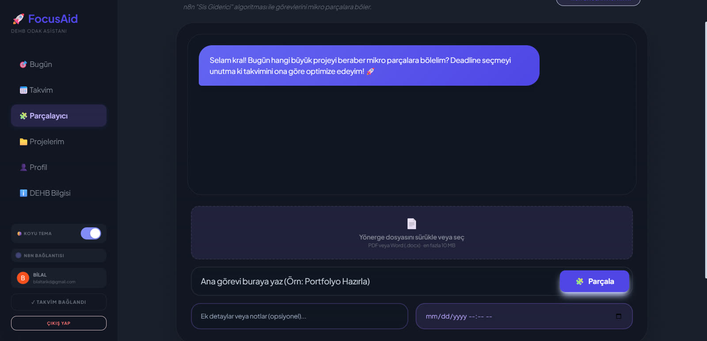
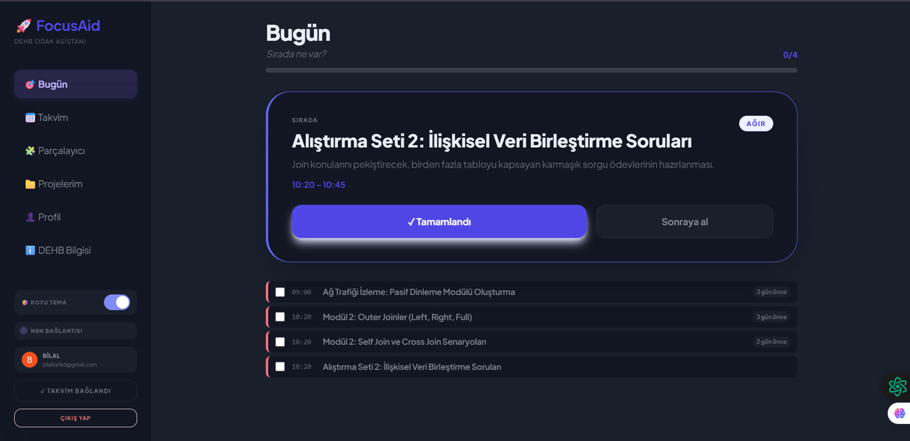
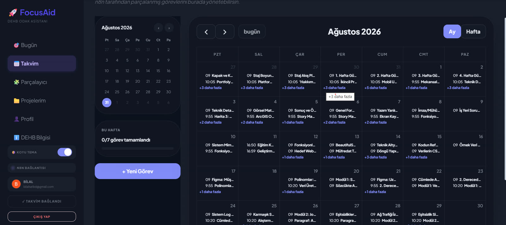
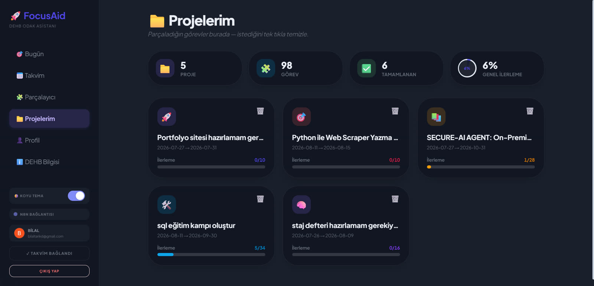
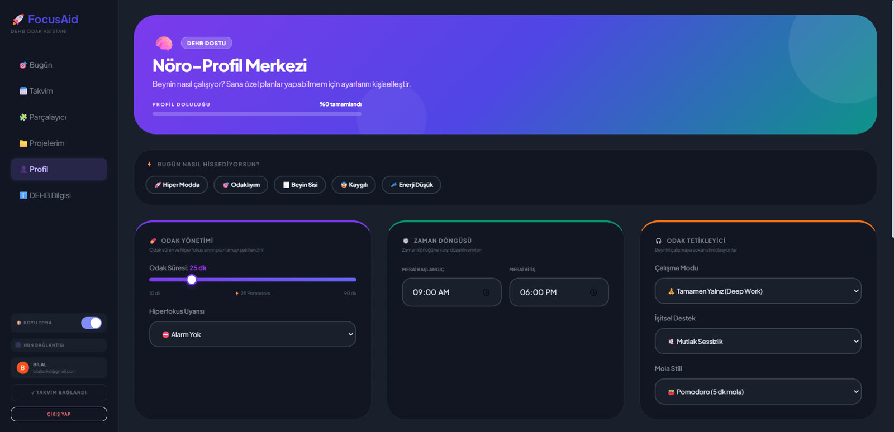
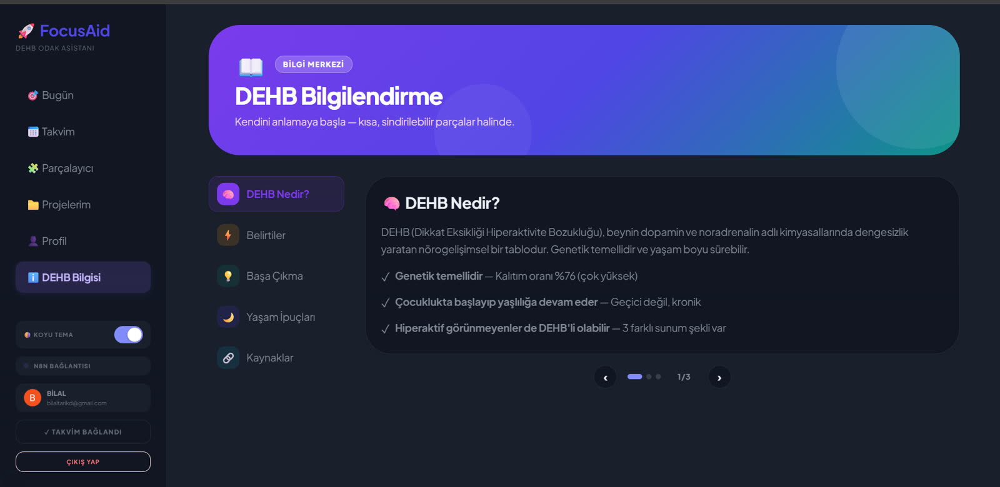

Yine o tanıdık felç hissi...
Yapacak onlarca devasa görev, açık yüzlerce sekme ve nereden başlayacağını bilemediğin için donup kalan bir zihin.
“Hepsini birden yapmam lazım ama elim hiçbirine gitmiyor...”
Yeni bir yapılacaklar listesi daha mı? Asla.
DEHB beyni yeni kurallardan nefret eder. FocusAid sana yeni bir disiplin dayatmaz; karmaşık görevleri tek bir hamlede mikro parçalara böler.
Korkutucu görevi arayüze sürükle...
Dağ gibi görünen şey, sadece birkaç taştan ibaretti.
Devasa görev parçalandı. Artık önünde felç eden bir dağ yok; beyninin reddedemeyeceği kadar minik adımlar var.
+50 XP Dopamin BoostSen sadece üret. Gerisini arkadaki akış yönetsin.
Takvim seansları, arka planda çalışan webhook'lar ve otomatik log kayıtları sayesinde dikkatin hiç dağılmadan ritme girersin.
Odak Süresi: 45 dk | Sıfır Dikkat Dağınıklığı
Günün tüm hedefleri bitti. Kalan zaman tamamen senin.
Vicdan azabı yok, ertelenmiş yığınlar yok. Kendi zihnine uygun tasarlanmış üretkenliğin tadını çıkar.
Kredi kartı gerekmez • 60 saniyede hazır
Kaydolmadan önce içeriyi gör.
Altı ekran, altı iş. Hepsi çalışan uygulamadan; maket değil.

Devasa görevi tek cümleyle yaz ya da yönerge dosyanı sürükle. FocusAid onu mikro adımlara böler; hangi adımın hangi güne ve saate düşeceğine takvimini okuyan algoritma karar verir.

Gün açıldığında karşına tüm liste değil, sıradaki tek adım çıkar. Tamamla ya da sonraya al — karar tek dokunuş.

Adımlar Google Takvim’e gerçek saatlerle düşer. Yerleştirici dolu saatleri atlar; hiçbir görev bir diğerinin üstüne binmez.

Parçaladığın her iş burada bir projeye dönüşür. Kaç adım bitti, genel ilerleme ne durumda — tek ekranda.

Odak süresi, çalışma modu, mola stili ve günün modu senin beynine göre ayarlanır. Plan bu profile göre kurulur; hazır bir şablona değil.

Kendini anlamak için kısa, kaynaklı ve sindirilebilir parçalar. Uygulamanın içinde, ayrı bir sekmeye gitmeden.